Live activity
See which applications are using privacy-sensitive devices as it happens.
Unified privacy indicators and controls for your microphone, camera, location, screen sharing, screenshots, recording, and audio output.
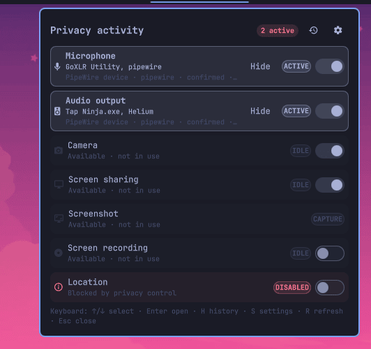
See which applications are using privacy-sensitive devices as it happens.
Mute audio, block supported devices, or apply a verified privacy lockdown with timed undo.
Customize monitored activity, hardware names and policies, ordering, colors, visibility, actions, and backends.
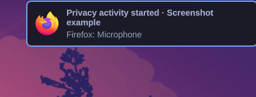
Activity actions, navigation, reset controls, and shortcut help stay fixed while the settings content scrolls. The panel keeps a stable width and limits its height to the current screen.
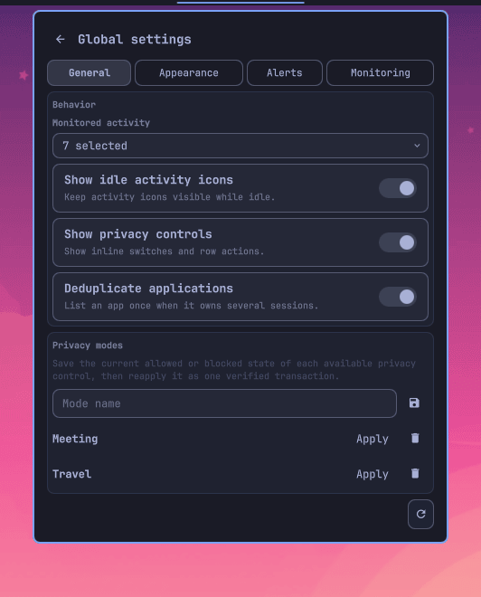
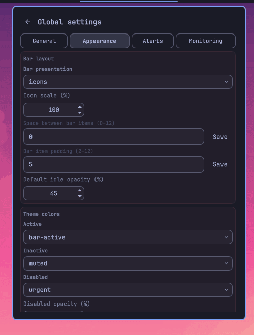
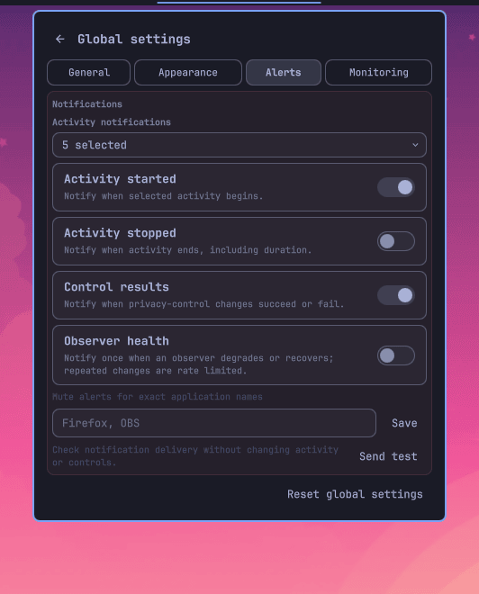
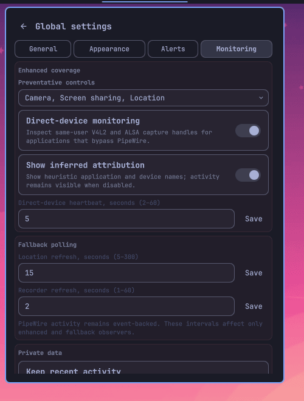
Review device customization, local history, private data, and monitoring health on demand.
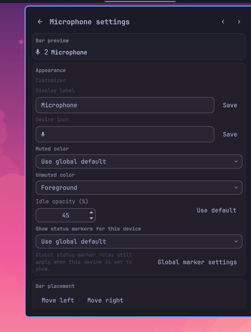
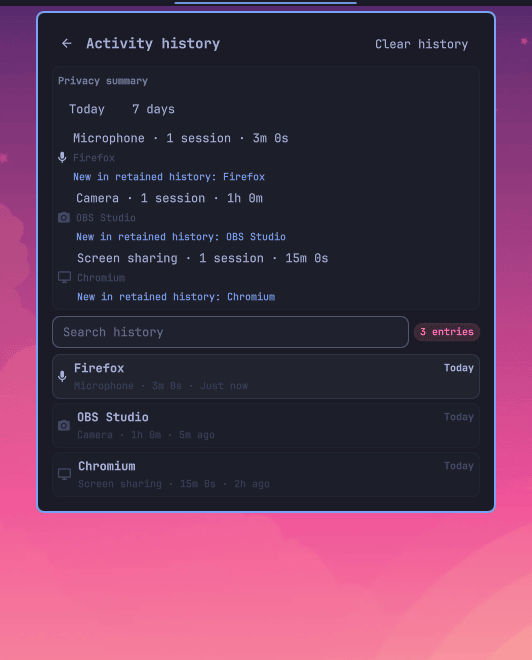
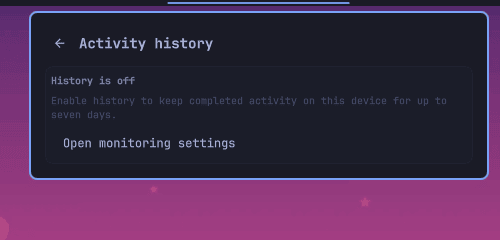
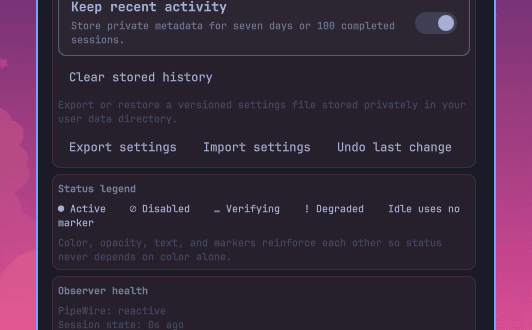
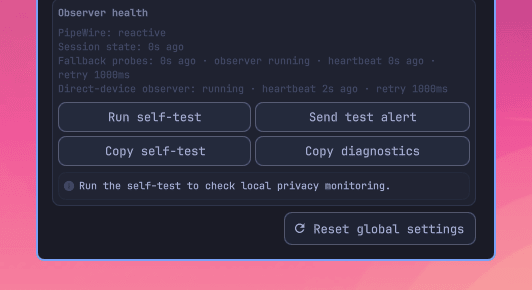
Install Privacy Devices from the terminal or review its community marketplace listing.
omarchy plugin add https://github.com/bolens/omarchy-privacy-devices.git --enable
omarchy plugin update io.github.bolens.privacy-devices
omarchy plugin disable io.github.bolens.privacy-devices
omarchy plugin remove io.github.bolens.privacy-devices
Privacy Devices requires Omarchy Quattro with Omarchy Shell, Quickshell, Hyprland, and PipeWire. Optional controls detect their own dependencies and show Install only when needed.
| Control or backend | Required package or command |
|---|---|
| Microphone and audio output | libpulse (pactl) or wireplumber (wpctl) |
| Camera blocking | polkit and a UVC-compatible USB camera |
| Location blocking | geoclue and polkit |
| Screen-share blocking | xdg-desktop-portal-hyprland |
| Omarchy screenshots | Omarchy capture command |
| Grim / Grim + Satty | grim, slurp; plus satty and wl-clipboard for Satty |
| Hyprshot / Flameshot | hyprshot; or flameshot, grim, and the Hyprland portal |
| Omarchy / GPU recording | gpu-screen-recorder |
| wf-recorder | wf-recorder and slurp |
Custom commands are user-managed. The plugin never installs their dependencies. Activity notifications use notify-send when available.
Add or move Privacy Devices through Setup → Bar. Its icons show current activity; the combined widget opens the full activity panel.
Keyboard: use ↑/↓ and Enter to select and open devices, H for history, S for settings, R to refresh observers, Esc to go back, and 1–4 to switch settings pages.
Toggle controllable rows directly in the popup. Blocking the Hyprland screen-sharing portal also suspends other features supplied by that portal until it is re-enabled.
| Activity | What you see | Available control |
|---|---|---|
| Microphone | Live PipeWire applications | Mute the default input inline or manage each source from device settings |
| Audio output | Applications playing audio | Mute the default output inline or manage each sink from device settings |
| Camera | Detected camera streams | Allow or block UVC USB camera interfaces |
| Location | GeoClue activity | Enable or runtime-mask GeoClue |
| Screen sharing | Portal and capture streams | Enable or runtime-mask the Hyprland portal |
| Screenshot | Selected capture backend | Launch a screenshot |
| Screen recording | Active recorder state | Start or stop the selected recorder |
Open Setup → Plugins → Privacy Devices. Use General, Appearance, Alerts, and Monitoring; press 1–4 to switch pages.
Choose monitored activities, idle visibility, control availability, privacy modes, and alert deduplication.
Tune bar layout, markers, counts, popup density, labels, colors, and disabled presentation.
Choose activity and control alerts, with per-application or per-device suppression and the detected application icon when available.
Optionally inspect same-user open device handles to detect direct V4L2 camera and ALSA microphone access that bypasses ordinary PipeWire streams.
Opt in to private metadata-only history bounded to seven days or 100 completed sessions, then open it from the clock icon or with H. Review local today or seven-day counts, duration, and applications new within retained history, or search by application, device, activity, source, or confidence. Disabling or confirming clear deletes the stored file.
Give detected hardware a friendly local name, hide a device from presentation, or suppress its alerts without changing monitoring.
Confirm one action to mute or block every available service-owned privacy control. Each action is observed and verified; partial failures remain visible, and successful changes can be undone for 30 seconds.
Export and import a versioned settings file in your private user data directory. Imports and global resets retain one undo point.
Review observer state and heartbeat freshness in Monitoring. Run the non-mutating guided self-test, verify notification delivery on demand, or copy redacted results when reporting a detection problem. Optional health alerts fire only on degraded and recovered transitions and are rate limited.
Notification clicks and the optional searchable Omarchy menu rows share a fixed, allowlisted action helper for activity, filtered history, diagnostics, lockdown, undo, and rescanning. Install or remove the owned menu block with privacy-menu-entry. Lockdown always opens confirmation; observed metadata is never executed.
Prefer pactl, wpctl, or automatic backend selection.
Use Omarchy, Grim, Grim + Satty, Hyprshot, Flameshot, GPU Screen Recorder, wf-recorder, or custom commands.
Exclude noisy apps and extend camera or screen-share keywords for unusual drivers and capture clients.
Unrecognized active video-input streams are treated as screen shares by default. Add unusual camera drivers to cameraKeywords to classify them correctly.
The plugin reads local PipeWire metadata and selected local process state. It sends no activity data over the network.
UVC camera and GeoClue controls request Polkit authorization before changing system state.
Location and portal masks disappear after reboot. UVC cameras normally rebind after reboot as well.
wf-recorder PIDs stay in the owner-only runtime directory and are checked for ownership and executable identity before stopping.
Idle, active, and degraded are distinct states. Session details identify the device, observation source, and whether attribution is confirmed or inferred.
Review custom commands before saving them. Custom screenshot and recording commands run unsandboxed as your user.
Open its settings and look for Install. Optional controls remain unavailable until their required package or command is present.
Add a distinctive driver or application term to cameraKeywords. Unknown video-input streams default to screen sharing.
The preventative screen-share control masks xdg-desktop-portal-hyprland. Re-enable it from the popup to restore all features supplied by that portal.
Re-enable the camera, location, or screen-share control in the popup. Runtime masks clear after reboot, and UVC cameras normally rebind after reboot.
It serially mutes microphone and audio output and blocks available camera, location, and screen-share controls. Unsupported or unavailable controls are reported rather than treated as successful. Use Undo lockdown within 30 seconds to restore the observed prior state.
Open plugin settings and choose a supported backend. Custom start, stop, or capture commands are available for user-managed tools.
No. Existing activity settles into a silent startup baseline, while completed activity remains available when optional history is enabled.
Choose the matching form on the GitHub issue page, or review the support guide.